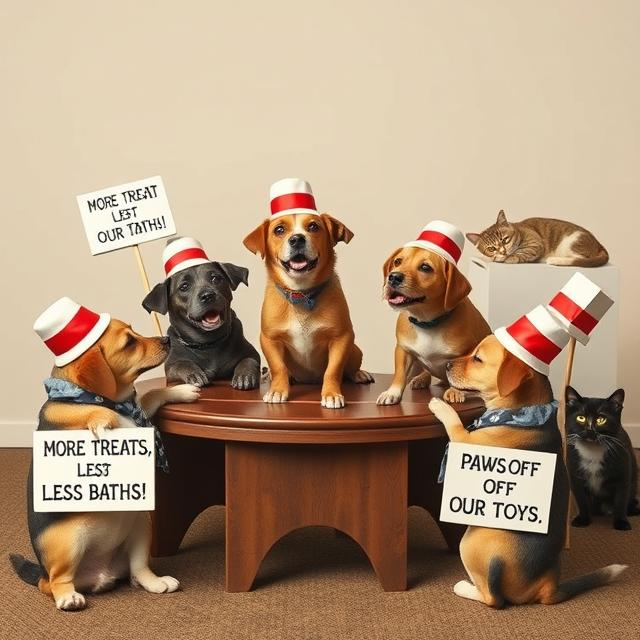

Welcome to The Daily Beacon
Where the extraordinary meets the everyday.
In a world of constant change, we bring you the stories that matter most—uncovering the truth, exploring the unknown, and sparking meaningful conversations. From groundbreaking scientific discoveries to the mysteries that defy explanation, The Daily Beacon is your trusted source for news that shapes tomorrow.
Local Man’s Google Search History Reveals He’s Been Googling ‘How to Google’ for Years
In a shocking revelation, 34-year-old Mike Henderson’s Google search history has exposed a decade-long struggle with the very tool he uses daily. Records show searches like “how to google better,” “what is google,” and “am I using google right?” Friends say they’re “not surprised,” noting Mike once spent 45 minutes searching for the “any” key after his computer prompted him to “press any key to continue.

Nation’s Dogs Form Union, Demand More Treats, Fewer Baths
In a historic move, dogs across the country have unionized under the banner of the Canine Workers Alliance (CWA). Their demands include a 50% increase in treats, a ban on vacuum cleaners, and mandatory belly rubs after every meal. Spokesdog Ruffus McWaggington stated, “We’ve been good boys and girls for too long. It’s time to bite back—politely, of course.” Cat representatives declined to comment, citing nap time.
Scientists Discover New Emotion: ‘Hangry, But for WiFi’
A groundbreaking study has identified a previously unknown emotion called “WiFry,” described as the intense frustration and irritability one feels when WiFi is slow or unavailable. Researchers say WiFry is most commonly experienced during video calls, streaming, or when trying to load memes. “It’s like hunger, but for connectivity,” said lead researcher Dr. Linda Sparks. “We’re working on a cure, but it keeps buffering
Local Ghost Haunts House, Complains About Current Decor Choices
Residents of 123 Elm Street have reported strange occurrences since moving in, including floating objects and eerie whispers. However, the ghost, who identifies as “Phantom Phil,” claims he’s just trying to give constructive feedback. “The beige walls? Horrendous. And don’t get me started on the IKEA furniture,” Phil said in an exclusive interview. Homeowners are considering hiring an interior designer to appease their spectral critic.